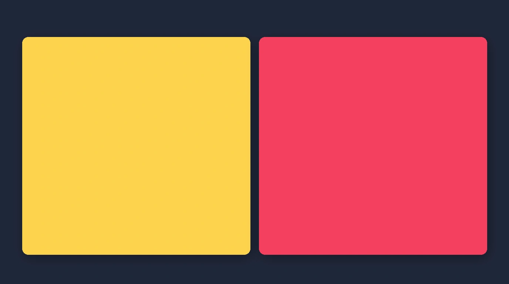
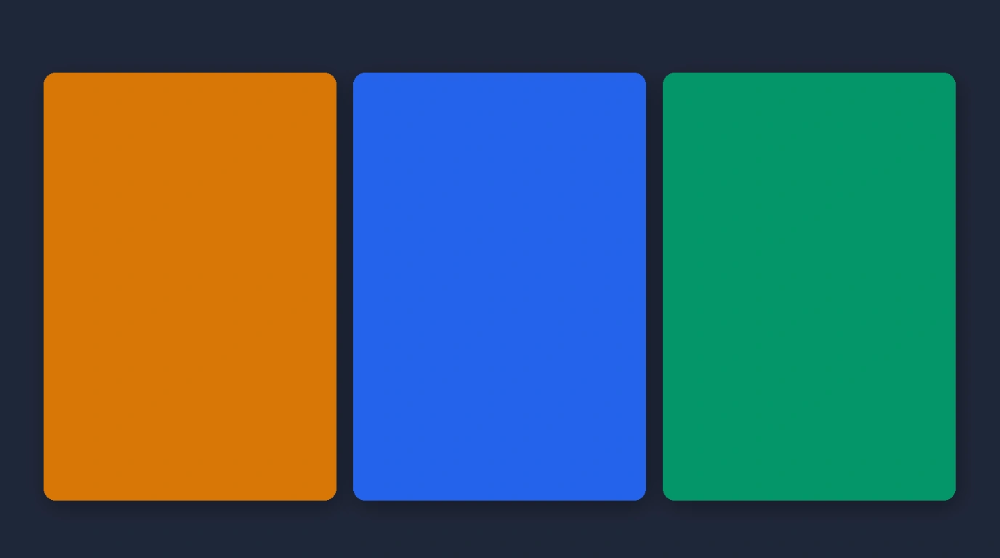

Published: August 13, 2026 • Masterclass Guide
How Do I Choose Clothes for My Skin Tone? A Practical Guide to Undertone, Contrast and Colour

UNDERSTAND → IDENTIFY → COMPARE → APPLY → SHOP
Choosing clothing colours is not about restrictive fashion rules. It's about understanding how skin depth, undertone, contrast, and colour intensity interact to make you look vibrant.
You spot a shirt, dress, or kurta in a rich shade that you absolutely adore. On a mannequin or a friend, the colour looks breathtaking. But when you put it on in the fitting room, something feels off—your complexion appears slightly washed out, under-eye shadows look more pronounced, or the clothing colour seems to wear you rather than highlighting your face.
When this happens, the common response is to assume that certain colours are simply off-limits. But asking “how do I choose clothes for my skin tone?” requires looking deeper than just surface skin shade. Choosing clothing colours that suit you is an interconnected relationship between four core characteristics: skin depth, undertone, personal contrast, and colour intensity.
This guide provides a practical, non-restrictive framework to help you navigate clothing colours with complete confidence.
How Do I Choose Clothes for My Skin Tone?
To choose clothing colours for your skin tone, identify your undertone (warm, cool, or neutral), evaluate your skin depth (fair, medium, deep), match your contrast level, and select colour intensity (muted vs. vivid) that harmonises with your natural features.
Skin Tone and Undertone Are Not the Same Thing
The first hurdle in finding colours that suit you is confusing skin tone with undertone. While related, they describe two distinct aspects of your complexion:

Skin Tone / Depth
The overall lightness or darkness of your skin surface (e.g. fair, wheatish, dusky, deep). This can fluctuate with sun exposure or tanning.
Skin Undertone
The subtle golden/yellow (warm), blue/pink (cool), or balanced (neutral) tint underneath your skin surface. Undertone remains constant regardless of tan.
Two people can share the exact same wheatish skin tone yet look radically different in a mustard yellow shirt because one has a warm golden undertone while the other has a cool olive undertone.
Start With Undertone: Warm, Cool or Neutral
Undertones fall into three broad categories. Understanding which direction your skin leans helps guide your initial clothing color choices:

Golden & Yellow Leaning
Complexions with golden, peachy, or yellow subsurface tones.
Blue & Pink Leaning
Complexions with rosy, blue, or cool red subsurface tones.
Balanced Mix
Complexions with a mix of warm and cool traits or olive undertones.
Your Skin Depth Matters Too
Skin depth (lighter, medium, dusky, deeper) dictates how light or dark a clothing garment appears relative to your face.
For instance, a deep dusky complexion wearing a deep navy top creates a harmonious, monochromatic depth, while wearing a bright pastel yellow creates high visual contrast. Neither is inherently wrong—it depends on whether you want high contrast or subtle harmony.
Contrast Changes How Colours Feel on You
Contrast is the visual lightness-to-darkness spread between your hair, eyes, and skin tone:
Low Contrast
Similar overall values between skin, hair, and eyes. Harmonises best with softer, tonal outfit combinations.
Medium Contrast
Balanced difference between features. Thrives in moderate contrast pairings like navy and beige.
High Contrast
Stark difference (e.g. dark hair with pale skin). Looks vibrant in bold light-and-dark outfit combinations.
Learn how contrast levels impact your appearance in our guide to AI Personal Colour Analysis →
Colour Intensity Matters Too
Two colours can belong to the exact same warm family but produce entirely different visual effects based on intensity (muted vs. vivid):
Soft, earthy, blended effect
High-energy, eye-catching punch
A Simple Starting Palette for Your Wardrobe
Use these reliable colour foundations as a starting point when building your wardrobe:
WARM-LEANING PALETTE
COOL-LEANING PALETTE
VERSATILE NEUTRAL FOUNDATIONS
What Colours Should You Try First?
To observe how colours interact with your skin, conduct a simple 2-minute mirror test:
THE 2-SWATCH MIRROR TEST
Hold two garments of similar depth but different undertones right below your chin in natural daylight:
Notice which hue makes your complexion look more luminous and rested versus pale or shadowy.
Don't Judge a Colour by Itself
A single colour never exists in isolation. How a shade looks on you depends heavily on:
- • Surrounding garments: A bright shirt looks completely different when paired with dark navy vs. crisp white.
- • Fabric texture: Matte cottons absorb light softly, while lustrous silks reflect light brightly.
- • Lighting environment: Warm indoor bulb light versus crisp natural outdoor daylight.
Indian Clothing Makes This Even More Interesting
Indian ethnic wear—including kurtas, sarees, salwar suits, dupattas, and festive blazers—features rich jewel tones, intricate embroidery, and metallic borders (zari).
Because Indian complexions span across fair, wheatish, dusky, and deep skin tones with golden, olive, or cool pink undertones, rich traditional shades like peacock blue, mehendi green, terracotta, mustard, and deep berry look extraordinarily radiant when paired with complementary undertones.
A Quick Clothing-Colour Checklist
BEFORE BUYING OR WEARING A NEW COLOUR, ASK:
- Does this colour lean warm (golden/yellow), cool (blue/pink), or neutral?
- Is the colour intensity soft and muted or bright and saturated?
- Does the colour depth harmonise with my natural complexion?
- Does the top-to-bottom contrast level feel intentional?
- How does this colour interact with the rest of my outfit pieces?
- Does the fabric sheen complement the overall style?
- Is this colour practical for my intended occasion and setting?
What If I Still Can't Tell Which Colours Suit Me?
Evaluating your own complexions manually can be tricky because skin depth, undertone, and contrast constantly interact under different lighting conditions.
A systematic assessment evaluates your precise facial contrast and undertone in natural light. Discover how instant skin scanning works with AI Personal Colour Analysis →
How a Digital Wardrobe Can Make This Practical
Knowing your flattering colours is invaluable—but it becomes truly powerful when you can identify those exact colour categories within your existing closet.
Indexing your clothes digitally by colour, category, and formality lets you spot palette gaps instantly. Explore how to catalog your closet with a Digital Wardrobe →
From “Which Colours Suit Me?” to “What Should I Wear?”
Once you understand your colours and know what you own, the next step is combining those shades into complete looks.
Learn how to generate context-ready looks with an AI Outfit Planner →
And Before You Buy Something New…
Before buying a new garment, evaluate whether its colour harmonises with your skin profile and pairs with your existing closet using Scan Before You Buy →
Your Skin Tone Is a Starting Point, Not a Rulebook
Choosing clothing colours for your skin tone is not about restricting yourself to a tiny approved list. It is about understanding your natural colouring well enough to make intentional choices that bring out your confidence.
Related Masterclass Guides
Skin Tone & Colour FAQs
To choose clothes for your skin tone, evaluate four core factors: skin depth (fair, medium, deep), undertone (warm, cool, neutral), personal contrast levels, and colour intensity (muted vs vivid). Start with core neutrals and test warm vs cool swatches close to your face.
Colours suit your skin tone best when their undertone harmonises with yours. Warm-leaning complexions tend to light up in mustard, terracotta, warm olive, and camel, while cool-leaning complexions thrive in sapphire blue, berry, cool emerald, and crisp white.
Skin tone (or skin depth) refers to the visible surface shade of your skin (fair, wheatish, olive, deep). Undertone refers to the subtle golden/yellow (warm) or blue/pink (cool) tint beneath the surface.
Warm undertones harmonise beautifully with golden-based hues like mustard yellow, terracotta, rust, mehendi green, warm olive, copper, and warm cream.
Cool undertones look radiant in blue-based shades such as royal sapphire blue, deep berry red, cool emerald, magenta, icy lavender, and crisp pure white.
Neutral undertones combine subtle warm and cool traits, allowing them to wear a wide range of colors—such as teal, soft jade, navy, charcoal, rose pink, and cream—without harsh clashing.
Indian skin tones range across fair, wheatish, dusky, and deep complexions with warm golden, cool pink, or rich olive undertones. Testing rich jewel tones (peacock blue, ruby, emerald, terracotta) against warm neutrals (cream, navy) is a great starting point.
Discover Your Flattering Colours
Download Colourity on Android to analyze your skin tone and match clothes for free.
Get Colourity AppIf you're not sure this applies to you yet, Colourity's colour analysis tool will tell you your undertone and season first.
Related reading: How Do I Know What Colors Suit Me? A Practical Guide to Finding Your Best Clothing Colours · The Complete Guide to Indian Skin Tones and the Colours That Suit Them · Warm vs Cool vs Neutral Undertone: How to Tell the Difference